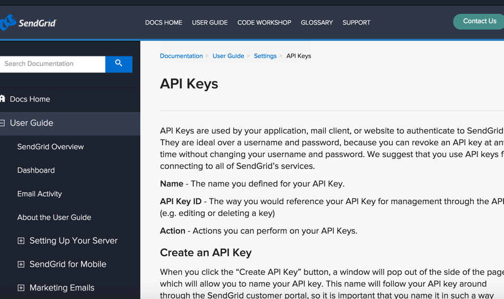
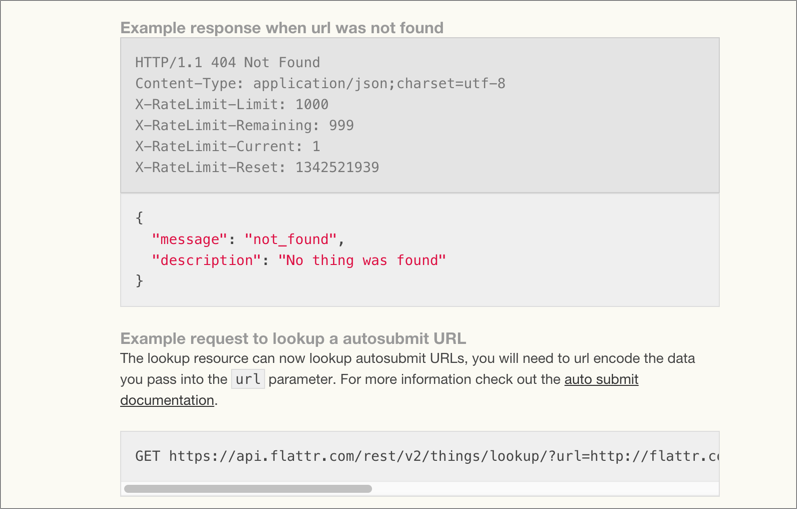
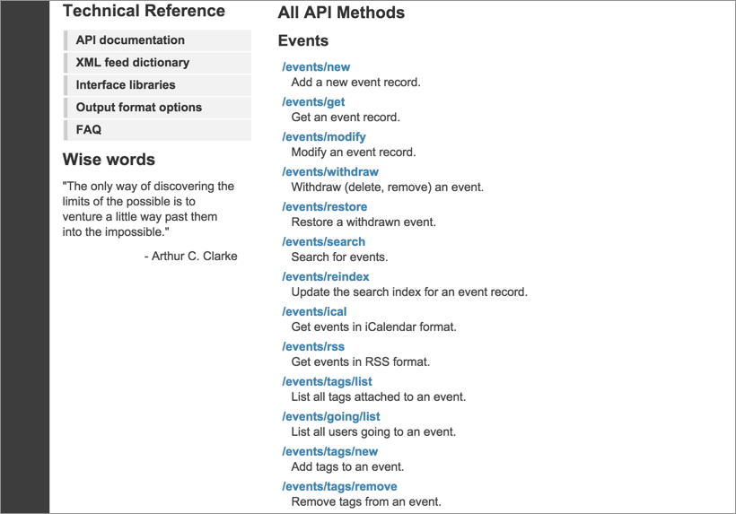
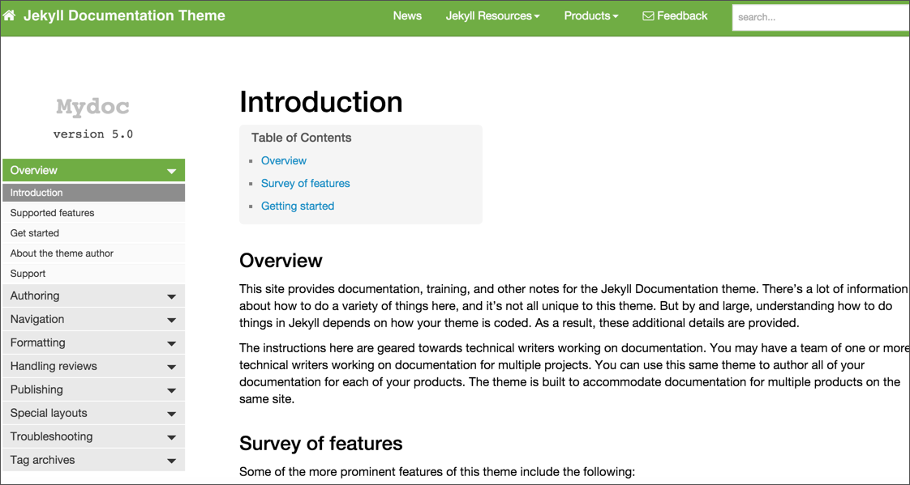
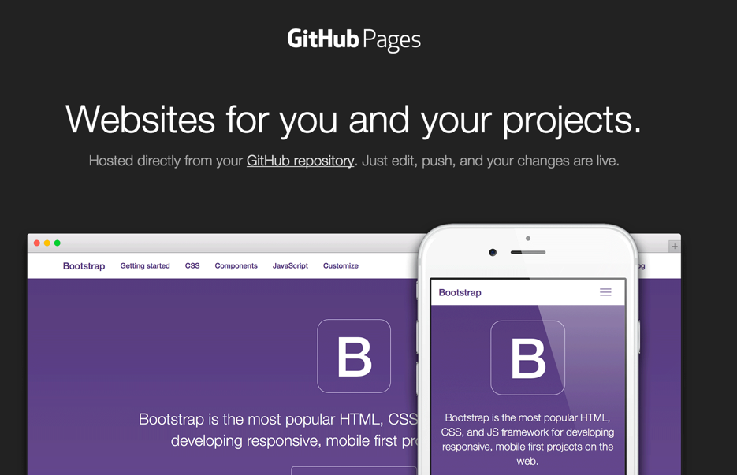

Documenting REST APIs workshop
By Tom Johnson / @tomjohnson
idratherbewriting.com
Workshop Outline
- Intro to APIs
- Using an API like a developer
- Documenting an API
- Publishing API documentation
1.0 Documenting REST APIs

1.1 The market for REST API doc
Doc is the interface

REST API growth

Services mashup

1.2 What is a REST API?
APIs allow different systems to interact

APIs are interfaces

REST API model

The web follows REST

1.3 Exploring a REST API marketplace
First, our API goal

See also yahoo weather
Mashape

Activity
Find Weather by fyhao on Mashape
1.4 Getting authorization keys
The need for API keys

Activity
Get the Mashape API keys so you can make requests.
1.5 Submit requests through Postman
About Postman

Activity
Make a request to each weather endpoint using Postman.
1.6 Installing cURL

1.7 Make a cURL call

1.8 Understand cURL more
cURL commands
curl http://example.com
curl http://example.com -i
curl http://example.com -I
curl -X GET http://example.com -I
/* GET, POST, PUT, DELETE */
Unpacking the Mashape example
curl --get --include 'https://simple-weather.p.mashape.com/aqi?lat=37.3
54108&lng=-121.955236' \
-H 'X-Mashape-Key: {api key}' \
-H 'Accept: text/plain'
cURL commands
| Command | Description |
|---|---|
-i or --include |
Include response headers |
-d or --data |
Include data to post |
-H or --header |
Submit header |
-X POST |
The HTTP method to use |
@filename |
Load content from a file |
Full example
curl -i -H "Accept: application/json" -X POST -d "{status:MIA}"
http://personsreport.com/status/person123
Activity
Test your memory:
-imeans...-Hmeans...-X POSTmeans...-dmeans...
1.9 Using methods with cURL (Petstore)
Using Petstore API

Activity
- Create a pet
- Update your pet's name
- Get your pet's name by ID
- Delete your pet
2.0 Analyze the JSON response
JSON objects are key-value pairs
{
"key1":"value1",
"key2":"value2"
}
JSON arrays are lists of items
["first", "second", "third"]
You can include objects inside arrays
[
{
"name":"Tom",
"age":39
},
{
"name":"Shannon",
"age":37
}
]
You can include arrays inside objects
{
"children": ["Avery","Callie","lucy","Molly"],
"hobbies": ["swimming","biking","drawing","horseplaying"]
}
Activity
Identify the objects and arrays in the weatherdata endpoint response.
2.1 Using the JSON from the response
Generating code

Logging the response to the console

Activity
Create a sample web page and print the weather description to the page following the instructions in 2.1.
2.2 Access the JSON values
dot notation
data.query.results.channel.item.description
console.log (data.query.results.channel.item.description);
Activity
Print the weather description to the page.
2.3 Diving into dot notation
Use a dot to access the value from a key
"data": {
"name": "Tom"
}
Access "Tom" using data.name.
Use square brackets to access the values in an array
"data" : {
"items": ["ball", "bat", "glove"]
}
To access glove, you would use data.items[2].
Exercise with dot notation
Practice accessing different values through dot notation following the exercise on 2.3.
2.4 New API endpoint to document
Endpoint wiki page details

Essential sections in reference documentation
- Resource description
- Endpoint
- Methods
- Parameters
- Request submission example
- Request response example
- Status and error codes
- Code samples
Activity
Create the basic structure for the endpoint documentation
2.5 Documenting resource descriptions
Terminology for "resource" varies
- API calls
- Endpoints
- API methods
- Calls
- Resources
- Objects
- Services
- Requests
Some examples
When it gets confusing to refer to resources by the endpoint
api_site.com/{apikey}/users
// gets all users
api_site.com/{apikey}/users/{userId}
// gets a specific user
api_site.com/{apikey}/rewards
// gets all rewards
api_site.com/{apikey}/rewards/{rewardId}
// gets a specific reward
api_site.com/{apikey}/users/{userId}/rewards
// gets all rewards for a specific user
api_site.com/{apikey}/users/{userId}/rewards/{rewardId}
// gets a specific reward for a specific user
api_site.com/{apikey}/users/{userId}/rewards/{missionId}
// gets the rewards for a specfic mission related to a specific user
api_site.com/{apikey}/missions/{missionid}/rewards
// gets the rewards available for a specific mission
Activity
Critique the Mashape Weather API descriptions.
Compare with Aeris Weather API descriptions.
Activity
Write the resource description for surfreport.
2.6 Documenting the endpoint definitions and methods
Terminology for "endpoint" varies
- Requests
- Endpoints
- API methods
- Resource URLs
- URLs
- URL syntax
Represent parameter values with curly braces
/campaigns/{campaign_id}/actions/send
Listing the method
Activity
Write the endpoint definition and method for surfreport.
2.7 Documenting parameters
Parameters configure the endpoint

Listing data types
- string
- integer
- boolean
- object
Parameter order is irrelevant
/surfreport/{beachId}?days=3&units=metric&time=1400
/surfreport/{beachId}?time=1400&units=metric&days=3
Submitting parameters in the request body
{
"days": 2,
"units": "imperial",
"time": 1433524597
}
Activity
Construct a table to list the surfreport parameters
2.8 Documenting sample requests
Requests clarify syntax

API Explorers provide interactivity with your own data

Activity
Document the sample request with the surfreport/{beachId} endpoint
2.9 Documenting sample responses
A sample of a sample response

Strategies for nested objects

Where to include sample responses

Activity
Create a sample response in your surfreport/{beachId} endpoint.
3.0 Documenting code samples
Which language?

See also Twilio
Auto-generating code samples

Activity
Generate a JavaScript code sample from Postman following the steps in 3.0.
Activity
Create a code sample for the surfreport endpoint.
3.1 Putting it all together

3.2 Creating the user guide
Sample template

Essential sections
- Overview
- Getting started
- Authorization keys
- Code samples/tutorials
- Response and error codes
- Quick reference
3.3 Writing the overview section

3.4 Writing the Getting Started section

3.5 Documenting authorization
API keys
Basic Auth
Authorization: Basic bG9sOnNlY3VyZQ==
HMAC

OAuth 2.0

Rate limits

3.6 Documenting response codes
Error codes, status codes

Status codes specific to endpoints
Possible reasons for errors
- Invalid API keys
- Wrong data types
- Bad JSON syntax in post body
- No resource to return
- Rate limits exceeded
- Max or min values exceeded
- Missing parameter
- Network-related error
3.7 Documenting code samples

3.8 Creating the quick reference guide
See also the Shopify cheat sheet.
3.9 Exploring more REST APIs
- EventBrite API
- Aeris Weather API
- Flickr API
- Klout API
Swap in {api key} for the real value. You can use my keys.
Note: JS display activities are optional.
4.0 EventBrite example
Activity
Use the EventBrite API to get the event title and description of this event.
4.1: Flickr example
Activity
Use the Flickr API to get photo images from this Flickr gallery.
4.2 Klout example
Activity
Use the Klout API to get your Klout score and a list of your influencers and influencees.
4.3 Aeris Weather Example
Activity
Use the Aeris Weather API to get the wind speed (MPH) for a specific place (your choice).
4.4 Moving on to Publishing API docs
Hooray! You finished the documenting APIs part of the course! Now, on to publishing API docs.
4.5 Publishing API doc
Why devs don't use HATs
- No integration into version control
- No auto-generation of doc from source
- No reference templating engines
- No interactive API consoles
- No sexy outputs that sell
4.6 List of 100 APIs
Programmable Web

Activity
Look at about 5 different APIs from the list on "4.6 List of 100 APIs." Identify one thing that the APIs have in common.
4.6 Breaking down API doc
- Guides
- Reference
- Tutorials
4.8 Tool decisions
- Who will write? Engineers or tech writers?
- Pros of having engineers write...
- Cons of having engineers write...
4.9 Github wikis
Collaboration platform

Activity
Following the instructions in 4.9, do the following:
- Create a Github wiki and publish content on a sample page.
- Save the Github repository locally.
- Make a change locally, commit it, and push the commit to the Github repository.
5.0 More about Markdown
Sample syntax
## Heading 2
This is a bulleted list:
* first item
* second item
* third item
This is a numbered list:
1. Click this **button**.
2. Go to [this site](http://www.example.com).
3. See this image:

For a detailed example, see the code sample on 5.0.
Activity
On your Github wiki page, edit the page and create the following:
- level 2 heading
- numbered list
- bulleted list bold word
- code sample with html highlighting
- table
5.1 Using a version control system
Github and social coding

5.2 Pull request workflows
Merging branches

5.3 REST API specification formats
- Swagger
- RAML
- API Blueprint
5.4 Swagger
Sample output

Activity
Follow the instructions in 5.4 to create a Swagger output using the information from the Mashape Weather API.
5.5 More about YAML
Code without < markup >

Sample syntax
reindeer:
- Donner
- Blitzen
- Comet
- Cupid
hobbies:
active:
- flying
- prancing
inactive:
- pawing
- driving
items:
- title: Course overview
url: /docapis_course_overview/
weight: 1.0
audience: writers
address: 1234 main street
route: Google maps
Same YAML content but in JSON
{
"reindeer": [
"Donner",
"Blitzen",
"Comet",
"Cupid"
],
"hobbies": {
"active": [
"flying",
"prancing"
],
"inactive": [
"pawing",
"driving"
]
},
"items": [
{
"title": "Course overview",
"url": "/docapis_course_overview/",
"weight": 1,
"audience": "writers"
}
],
"address": "1234 main street",
"route": "Google maps"
}
My YAML tutorial

5.6 RAML
Sample output

Activity
Follow the instructions in 5.6 to create a RAML output using the information from the Mashape Weather API.
5.7 API Blueprint
Sample output

Activity
Follow the instructions in 5.7 to create an API Blueprint output using the information from the Mashape Weather API.
5.8 Static site generators
Documentation theme for Jekyll
Writing in Jekyll

Github Pages
Github Pages How-to
- Create Github repo.
- Create gh-pages branch.
- In repo settings, make gh-pages branch the default.
- Clone the repo and commit a Jekyll site.
- Github builds and displays the Jekyll site.
Activity
Fork the Documentation theme for Jekyll and publish it via CloudCannon following the instructions in 5.8.
5.9 Readme.com
Sample output

Activity
Explore creating pages and publishing API documentation (the Weather Mashape API info) on readme.com.
6.0 Miredot

6.1 Custom UX solutions

6.2 Help authoring tools

6.3 Design patterns
Common themes

Five patterns
- Structure and templates
- Website platform
- Abundant code samples
- Long-ish pages
- API Interactivity
6.4 Structure and templates

6.5 Website platform

6.6 Abundant code samples

6.7 Long-ish pages

6.8 API Interactivity

6.9 Challenging factors
- Translation
- Content re-use
- Versioning
- Authentication
7.0 Tools versus content

7.1 Overview to native library APIs

Programming skills needed to document native library APIs?
7.2 Getting the Java source
Sample Java project

Activity
Download the acme sample project on Github following the instructions in 7.2.
- Clone the source on Github
- In Eclipse, go to File > New Java Project
- Clear the Use default location check box.
- Browse to where you cloned the Github project.
7.3 Java in a nutshell
Classes
public class Bicycle {
// code...
}
Methods
add(a, b) {
sum = a + b;
}
Methods
class Bicycle {
void turn() {
// code ...
}
void pedal(int rotations) {
System.out.println("Your speed is " + rotations + " per minute".);
}
int brake(int force, int weight) {
torque == force * weight;
return torque;
}
}
Main method
public static void main(String[] args) {
//Java runs the code it finds within this method...
}
Fields
class Bicycle {
String brand;
int size;
}
Enums
public enum Spoke { SINGLE-BUTTED, DOUBLE-BUTTED, TRIPLE-BUTTED };
Objects
myBicycle Bicycle = new Bicycle();
myBicycle.brand = "Trek";
myBicycle.pedal();
Constructors
public class Bicycle{
public Bicycle(String brand, int size) {
this.brand = model;
this.size = size;
}
}
Bicycle myBicycle = new Bicycle ("Trek", 22);
Packages
package vehicles
public class Bicycle {
}
Exceptions
public class Bicycle throws IOException {
}
Inheritance
public class Bicycle extends Vehicle {
}
Interfaces
public interface Wheel {
public void rotate();
}
public class MountainBikeWheel implements Wheel {
public void rotate() {
System.out.println("whoosh ... whoosh .... whoosh");
}
}
JAR files and WAR files
#/media/File:Nuvola_mimetypes_java_jar.png)
Java summary
- Class: Blueprints for something
- Object: An instance of a class
- Methods: What the object/class can do
- Fields: Variables in the object/class
- Constructor: A method to create an object for a class
- Package: A folder that groups classes
Java summary
- Access modifier: The scope something can be accessed at
- Interface: A skeleton class with empty methods
- Enum: A data type offering predefined constants
- Subclass: A class that inherits another class' members
- JAR file: A zip-like file containing Java classes
- WAR file: A compiled Java web app to be deployed
7.4 Create a Javadoc

7.5 Javadoc tags
Common tags
- @author
- @param
- @deprecated
- @return
- @see
- {@link}
- @throws
- @override
Comments versus Javadoc annotations
// sample comment...
/*
sample comment
*/
/**
*
*
*
*
*/
General pattern
/**
* [short description]
*
* [long description]
*
* [author, version, params, returns, throws, see, other tags]
* [see also]
*/
The description
/**
* Short one line description.
*
* Longer description. If there were any, it would be
* here.
*
* And even more explanations to follow in consecutive
* paragraphs separated by HTML paragraph breaks.
*
* @param variable Description text text text.
* @return Description text text text.
*/
public int methodName (...) {
// method body with a return statement
}
Tag order
@author (classes and interfaces)
@version (classes and interfaces)
@param (methods and constructors)
@return (methods)
@throws (@exception is an older synonym)
@see
@since
@serial
@deprecated
@param tags
@param url the web address of the site
@throws tag
@throws IOException if your input format is invalid
@see tags
@see #field
@see #Constructor(Type, Type...)
@see #Constructor(Type id, Type id...)
@see #method(Type, Type,...)
@see #method(Type id, Type, id...)
@see Class
@see Class#field
@see Class#Constructor(Type, Type...)
@see Class#Constructor(Type id, Type id)
@see Class#method(Type, Type,...)
@see Class#method(Type id, Type id,...)
@see package.Class
@see package.Class#field
@see package.Class#Constructor(Type, Type...)
@see package.Class#Constructor(Type id, Type id)
@see package.Class#method(Type, Type,...)
@see package.Class#method(Type id, Type, id)
link tags
/**
* First paragraph.
*
* Link to a class named 'Foo': {@link Foo}.
* Link to a method 'bar' on a class named 'Foo': {@link Foo#bar}.
* Link to a method 'baz' on this class: {@link #baz}.
* Link specifying text of the hyperlink after a space: {@link Foo the Foo class}.
* Link to a method handling method overload {@link Foo#bar(String,int)}.
*/
public ...
Previewing Javadoc comments

7.6 Exploring the Javadoc output

7.7 Doxygen
Front-end GUI generator

Doxygen output sample

7.8 Creating non-ref docs with native library APIs
… auto-generated documentation is worse than useless: it lets maintainers fool themselves into thinking they have documentation, thus putting off actually writing good reference by hand. If you don’t have documentation just admit to it. Maybe a volunteer will offer to write some! But don’t lie and give me that auto-documentation crap. — Jacob Kaplan Moss
7.9 My biggest tip: Test everything

8.0 Workshop summary
- Using a REST API as a developer
- Documenting a new API endpoint
- Documenting non-reference sections
- Exploring other REST APIs
- Publishing API docs
- Design patterns
- Documenting native library APIs
Thanks!

Tom Johnson
— idratherbewriting.com
— @tomjohnson
— tomjoht@gmail.com